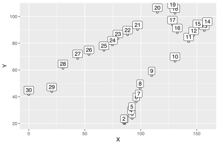
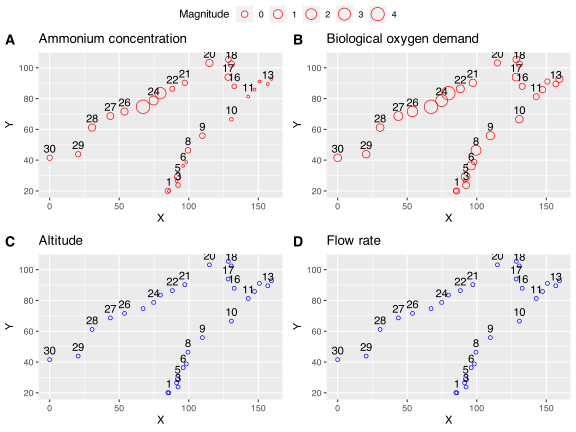
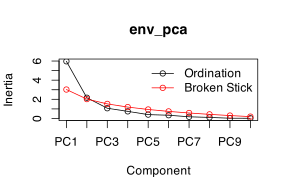
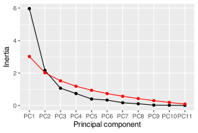
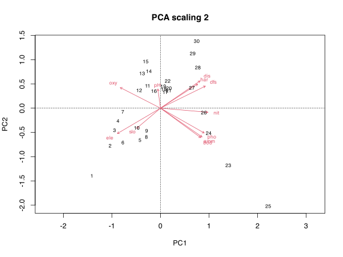
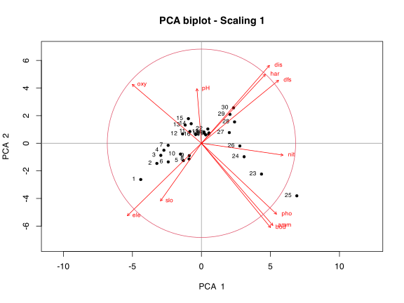
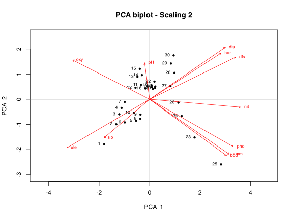

8a. Principal Component Analysis (PCA)
Introducing the most basic of ordnination techniques
![]()
| Type | Name | Link |
|---|---|---|
| Slides | PCA lecture slides | 💾 BCB743_08_PCA.pdf |
| Data | The Doubs River data | 💾 Doubs.RData |
| R function | A function for ordination plots | 💾 cleanplot.pca.R |
Principal Component Analysis (PCA) is one of many ordination techniques. Depending on the application of technical/scientific discipline it is applied in, you might see it mentioned under dimensionality reduction techniques; other times it is named as a form of unsupervised learning. Regardless of what it is called, ordination refers to a suite of multivariate techniques that reduces a multivariate (multi-dimensional) dataset in such a way that when it is projected onto a lower dimensional space, typically 2D or 3D space, any intrinsic structure in the data forms visually-discernible patterns (Pielou, 1984). Ordination summarises community data (e.g. samples of species presence-absence or abundance across multiple sites) by producing a low-dimensional ordination space where similar samples (typically species) plot close together, and dissimilar samples far apart. Dimensions of this low dimensional space represent important and interpretable environmental gradients.
In ecology, ordination techniques are used to describe relationships between community structure patterns and underlying environmental gradients. So, we can ask questions such as, “Which environmental variables cause a community to vary across a landscape?” Ordinations allow us to determine the relative importance of different gradients, and graphical presentations of the results can lead to intuitive interpretations of species-environment relationships.
1 Set-up the analysis environment
2 The Doubs River data
dfs ele slo dis pH har pho nit amm oxy bod
1 0.3 934 48.0 0.84 7.9 45 0.01 0.20 0.00 12.2 2.7
2 2.2 932 3.0 1.00 8.0 40 0.02 0.20 0.10 10.3 1.9
3 10.2 914 3.7 1.80 8.3 52 0.05 0.22 0.05 10.5 3.5
4 18.5 854 3.2 2.53 8.0 72 0.10 0.21 0.00 11.0 1.3
5 21.5 849 2.3 2.64 8.1 84 0.38 0.52 0.20 8.0 6.2
6 32.4 846 3.2 2.86 7.9 60 0.20 0.15 0.00 10.2 5.33 First do a correlation
# computing a correlation matrix
corr <- round(cor(env), 1)
# visualization of the correlation matrix
ggcorrplot(corr, type = 'upper', outline.col = "white",
colors = c("#1679a1", "white", "#f8766d"),
lab = TRUE)Some variables are very correlated, and they might be omitted from the subsequent analyses. We say that these variables are ‘collinear.’ Collinear variables cannot be teased apart in terms of finding out which one is most influential in structuring the community. There are more advanced ways to search for collinear variables (e.g. Variance Inflation Factors, VIF) and in this way we can systematically exclude them from the PCA. See Graham (2003) for a discussion on collinearity. Here we will proceed with all the variables.
4 See the spatial context
The patterns in the data and the correlations between them will make more sense if we can visualise a spatial context. Thankfully spatial data are available:
head(spa) X Y
1 85.678 20.000
2 84.955 20.100
3 92.301 23.796
4 91.280 26.431
5 92.005 29.163
6 95.954 36.315ggplot(spa, aes(x = X, y = Y, label = rownames(spa))) +
geom_point(shape = 1) +
geom_label(vjust = 0, nudge_y = 0.5, check_overlap = TRUE)
These site numbers correspond approximately to the ones in Verneaux (1973) but some of the numbers may have been shifted slightly in the example Doubs dataset used here compared to how they were originally numbered in Verneaux’s thesis and subsequent publication. This should not affect the interpretation. We can also scale the symbol size by the magnitude of the environmental variables. Lets look at two pairs of variables that are strongly correlated with one-another:
# We scale the data first so as to better represent the full
# magnitude of all variables with a common symbol size
env_std <- decostand(env, method = "standardize")
# positive correlations
plt1 <- ggplot(spa, aes(x = X, y = Y, label = rownames(spa))) +
geom_point(shape = 1, col = "red", aes(size = env_std$amm, shape = 3)) +
geom_text(vjust = -0.5, nudge_y = 0.5, check_overlap = TRUE) +
labs(size = "Magnitude", title = "Ammonium concentration")
plt2 <- ggplot(spa, aes(x = X, y = Y, label = rownames(spa))) +
geom_point(shape = 1, col = "red", aes(size = env_std$bod)) +
geom_text(vjust = -0.5, nudge_y = 0.5, check_overlap = TRUE) +
labs(title = "Biological oxygen demand")
# inverse correlations
plt3 <- ggplot(spa, aes(x = X, y = Y, label = rownames(spa))) +
geom_point(shape = 1, col = "blue", aes(size = env_std$alt)) +
geom_text(vjust = -0.5, nudge_y = 0.5, check_overlap = TRUE) +
labs(title = "Altitude")
plt4 <- ggplot(spa, aes(x = X, y = Y, label = rownames(spa))) +
geom_point(shape = 1, col = "blue", aes(size = env_std$flo)) +
geom_text(vjust = -0.5, nudge_y = 0.5, check_overlap = TRUE) +
labs(title = "Flow rate")
ggarrange(plt1, plt2, plt3, plt4, nrow = 2, ncol = 2,
common.legend = TRUE, labels = "AUTO")
5 Do the PCA
We use the function rda() to do the PCA, but it can also be performed in base R with the functions prcomp() and princomp(). rda() is the same function that we will use later for a Redundancy Analysis, but when used without specifying constraints (as we do here) it amounts to simply doing a PCA. Typically we standardise environmental data to unit variance, but the PCA done by the rda() function accomplishes this step automagically when scale = TRUE. When applied to environmental data (as we typically do with a PCA) it works with correlations amongst the scaled variables. PCA preserves Euclidean distance and the relationships detected are linear, and for this reason it is not typically applied to species data without suitable transformations. In fact, in this module we will seldom apply a PCA to species data at all.
env_pca <- rda(env, scale = TRUE)
env_pcaCall: rda(X = env, scale = TRUE)
Inertia Rank
Total 11
Unconstrained 11 11
Inertia is correlations
Eigenvalues for unconstrained axes:
PC1 PC2 PC3 PC4 PC5 PC6 PC7 PC8 PC9 PC10 PC11
5.969 2.164 1.065 0.739 0.400 0.336 0.173 0.108 0.024 0.017 0.006 # same ...
# env_std <- scale(env)
# env_pca <- rda(env_std, scale = FALSE)
# env_pcaEcologists use the term inertia as a synonym for ‘variation’, but some PCA software (such as R’s prcomp() and princomp()) simply uses the term sdev for standard deviations. In PCA, when we use a correlation matrix (as we do here), the inertia is the sum of the diagonal values of the correlation matrix, which is simply the number of variables (11 in this example). When a PCA uses a covariance matrix the inertia is the sum of the variances of the variables.
You will also see in the output the mention of the term ‘unconstrained’. In a PCA the analysis is always unconstrained (i.e. not influenced by some a priori defined variables we hypothesise to explain the between site patterns in the multivariate data).
The section headed Eigenvalues for unconstrained axes shows the relative importance of the resultant reduced axes, and they can be used to determine the proportion of the total inertia (sum of the eigenvalues) captured by any one of the axes. They can be accessed with the function eigenvals() (the preferred function; see ?rda for help), but an alternative method is given below. The first eigenvalue (the one associated with PC1) always explains the most variation (the largest fraction), and each subsequent one explains the largest proportion of the remaining variance. We say the axes are orthogonal and ranked in decreasing order of importance. The sum of all eigenvalues is the total inertia, so collectively they theoretically can explain all of the variation in the dataset (but clearly they should not be used to explain all the variance). To extract the first eigenvalue we can do:
The total inertia is:
So the proportion of variation explained by the first PC is:
We can show the same information as part of a more verbose summary. Here we see the pre-calculated Proportion Explained and Cumulative Proportion (it should be obvious what this is). There is also an assortment of other information, viz. Scaling 2 for species and site scores, Species scores, and Site scores.
summary(env_pca)
Call:
rda(X = env, scale = TRUE)
Partitioning of correlations:
Inertia Proportion
Total 11 1
Unconstrained 11 1
Eigenvalues, and their contribution to the correlations
Importance of components:
PC1 PC2 PC3 PC4 PC5 PC6 PC7
Eigenvalue 5.9687 2.1639 1.06517 0.73875 0.40019 0.33563 0.17263
Proportion Explained 0.5426 0.1967 0.09683 0.06716 0.03638 0.03051 0.01569
Cumulative Proportion 0.5426 0.7393 0.83616 0.90332 0.93970 0.97022 0.98591
PC8 PC9 PC10 PC11
Eigenvalue 0.108228 0.023701 0.017083 0.005983
Proportion Explained 0.009839 0.002155 0.001553 0.000544
Cumulative Proportion 0.995748 0.997903 0.999456 1.000000
Scaling 2 for species and site scores
* Species are scaled proportional to eigenvalues
* Sites are unscaled: weighted dispersion equal on all dimensions
* General scaling constant of scores: 4.226177
Species scores
PC1 PC2 PC3 PC4 PC5 PC6
dfs 1.08657 0.5342 -0.27333 -0.13477 0.07336 0.22566
ele -1.04396 -0.6148 0.20712 0.12854 0.14610 0.02111
slo -0.57703 -0.4893 -0.63490 -0.71684 0.33349 -0.11782
dis 0.95843 0.6608 -0.32456 -0.16183 0.11542 0.13935
pH -0.06364 0.4629 1.01317 -0.58606 0.17094 0.07360
har 0.90118 0.5850 0.06449 0.25696 0.30995 -0.53390
pho 1.05821 -0.6014 0.13866 -0.17883 -0.11125 -0.13751
nit 1.15013 -0.1005 -0.05167 -0.24537 -0.35105 0.02145
amm 1.00679 -0.6969 0.14077 -0.14684 -0.19200 -0.11904
oxy -0.97459 0.4991 -0.09017 -0.31040 -0.38066 -0.36500
bod 0.97315 -0.7148 0.15145 0.07193 0.23633 -0.05540
Site scores (weighted sums of species scores)
PC1 PC2 PC3 PC4 PC5 PC6
1 -1.41274 -1.40098 -2.03484 -2.67759 1.117150 -0.184951
2 -1.03725 -0.77955 0.24400 0.25635 -1.192043 1.849810
3 -0.94507 -0.46765 1.25042 -0.49330 -0.234194 1.319198
4 -0.87371 -0.26988 0.19304 0.51979 -0.494639 -0.116092
5 -0.42088 -0.66944 0.83191 0.71729 0.867751 -0.112219
6 -0.77224 -0.72067 -0.07357 0.77902 -0.386130 0.654273
7 -0.77466 -0.08103 0.39630 0.19224 0.416470 -1.026304
8 -0.28840 -0.60589 0.83822 1.01440 1.707316 -0.295861
9 -0.28305 -0.47710 0.39908 1.13075 0.882098 -0.002961
10 -0.48714 -0.41860 -1.27555 0.90267 0.013704 -0.542270
11 -0.26940 0.45384 0.09119 -0.15127 -0.233814 -1.157483
12 -0.43834 0.36049 -0.52352 0.57279 -0.650095 -0.817673
13 -0.37794 0.70379 0.10339 0.06127 -0.101571 -1.376623
14 -0.23878 0.75522 0.83648 -0.55822 -0.011527 -1.221217
15 -0.30425 0.95026 1.80274 -1.48211 0.135021 -0.031795
16 -0.13354 0.33951 -0.23252 0.19177 -0.667112 -0.227348
17 0.10111 0.32379 -0.20380 0.18495 -0.676546 -0.364915
18 0.06913 0.37913 -0.25881 0.06998 -0.851379 -0.289054
19 0.05746 0.43915 0.04566 -0.32171 -0.899449 0.090759
20 0.17478 0.39927 -0.36244 -0.15647 -1.300718 0.093396
21 0.16944 0.35608 -0.73929 0.42751 -0.509249 0.653892
22 0.14898 0.55339 -0.08008 -0.04972 0.196636 0.621753
23 1.39778 -1.19102 0.66424 -0.46178 0.252908 -0.573369
24 0.99357 -0.52036 0.07186 0.48088 1.068785 0.373991
25 2.22002 -2.03168 0.17940 -0.52606 -1.148014 -0.786506
26 0.89388 -0.10410 -0.61440 0.42034 0.343649 0.800522
27 0.64866 0.41296 -0.17444 -0.26105 0.274443 1.259099
28 0.77100 0.82592 0.43387 -1.00092 -0.001674 0.703378
29 0.66413 1.11562 -1.58043 0.65099 0.650327 0.020001
30 0.74743 1.36955 -0.22810 -0.43281 1.431895 0.686570Species scores are the loadings (a.k.a. rotated and scaled eigenvectors) that indicate the strength of contribution of the original environmental variables to the new variables, the Principal Components (PC1, PC2, etc.). These loadings effectively indicate the degree of correlation between the original variables and the new principal components, and the sign of the eigenvectors indicate the polarity (inverse or positive) of the correlation between the original variable and the new variable. Even though we work with environmental data here, these scores are still called species scores by the software—don’t let the name confuse you! (Why do you think this is?) They indicate how much each of the original environmental variables contribute to PC1, PC2, etc. The larger (more positive) and smaller (more negative) values indicate a greater contribution, albeit in opposite directions. In the example, PC1 is made up of uneven contributions from most of the original variables, with the largest value being nitrate (1.15013) and smallest oxygen (-0.97459). Nitrate and oxygen therefore contribute most towards the differences between sites so that places with more nitrate are also the places with the lowest dissolved oxygen concentration. This makes ecological sense too. pH and slope are the least important variables, i.e. they are least able to explain the differences between sites along PC1. Given the strength of PC1 (it explains 54.3% of the inertia), one might hypothesise that its constituent variables, particularly nitrate and oxygen, influence many aspects of the community. The species scores are presented as arrows on the ordination diagrams (see below). Longer vectors have a greater influence (are stronger drivers) on environmental (and possibly species) differences between sites, and their direction indicates along which PC axes their influence is greatest.
Site scores are the scaled and rotated coordinates of the objects (sites or samples, one for each row of the raw data table). They are used to plot the position of the sites in 2D or 3D ordination space. Sites spread further apart from others in this space differ much in terms of the environmental conditions. How far they spread apart depends on the major environmental gradients indicated by the species scores—i.e. along PC1, sites that are spread far apart in this dimension experience very different concentrations of nitrate and oxygen (see the species scores for the identity of the influential variables).
In ecology, it is customary to plot the Site and Species Scores as ordination diagrams called biplots for a few of the reduced axes. We will get to this below.
Scaling 1 and Scaling 2, depending on what was specified in the rda() function call, are useful for whether one wants to interpret species (scaling 1) or variables (scaling 2). When calling Scaling 1, the distances between points plotted on the ordination diagram will retain their Euclidian distances, which allows for better interpretation of how sites relate to one-another. Calling Scaling 2 preserves more accurately the angles between variables with the consequence that in the biplot smaller angles between variable vectors will reflect stronger correlations. More on scaling below.
6 Graphical represenations of ordinations
6.1 Plots along one-dimension
Now I will construct some primitive graphs of the Site and Species Scores to demonstrate how to interpret the eigenvectors associated with each eigenvalue. We will typically not do this kind of graphical display—for plots suitable for publication see the Biplots section, below.
The first thing we need to do is extract the Species and Site Scores in a manner that makes them convenient for plotting. To do this, we can apply the scores() function to the PCA object, env_pca, and assign the output to tidied dataframes. The scores() function can tidy the data to some extent, but I make it even tidier in subsequent steps by creating long format data (rather than wide) using the pivot_longer() function. Various other bits of code lines accomplish additional restructuring of the data to make datasets that are fully compliant for creating the kind of figure I have in mind:
# species scores first by setting 'display' to species
# we are interested in all axes (PC1 to PC11) so set the 'choices' argument
# appropriately (see `?scores`):
spp_sc <- scores(env_pca, display = "species", choices = seq(1:11), tidy = TRUE)
# now pivot longer to make the data even tidier:
spp_sc <- spp_sc |>
select(-score) |> # remove column
pivot_longer(cols = PC1:PC11, # pivot
names_to = "PC_axis",
values_to = "score") |>
group_by(PC_axis) |>
mutate(rank = rank(abs(score)), # rank absolute scores
origin = 0, # create a column for start of arrows
PC_axis = factor(PC_axis, levels = paste0(rep("PC", 11), seq(1:11)))) |>
# above, reorder the factor levels so PC axis plot in right order
filter(rank >= 10) |> # keep only 2 higheest ranked scores
ungroup()
head(spp_sc)# A tibble: 6 × 5
label PC_axis score rank origin
<chr> <fct> <dbl> <dbl> <dbl>
1 dfs PC1 1.09 37 0
2 dfs PC2 0.534 21 0
3 dfs PC3 -0.273 22 0
4 dfs PC6 0.226 17 0
5 dfs PC11 -0.0774 13 0
6 ele PC1 -1.04 35 0# now the site scores:
site_sc <- scores(env_pca, display = "sites", choices = seq(1:11), tidy = TRUE)
site_sc <- site_sc |>
select(-score) |>
pivot_longer(cols = PC1:PC11,
names_to = "PC_axis",
values_to = "score") |>
mutate(label = as.numeric(label),
PC_axis = factor(PC_axis, levels = paste0(rep("PC", 11), seq(1:11))))
head(site_sc)# A tibble: 6 × 3
label PC_axis score
<dbl> <fct> <dbl>
1 NA PC1 1.09
2 NA PC2 0.534
3 NA PC3 -0.273
4 NA PC4 -0.135
5 NA PC5 0.0734
6 NA PC6 0.226 How do we know how many reduced axes are influential and should be kept? Commonly recommended is the broken stick method—keep the principal components whose eigenvalues are higher than corresponding random broken stick components:
# make a scree plot using the vegan function:
screeplot(env_pca, bstick = TRUE, type = "lines")
# or assemble from scratch in ggplot2:
# extract eigenvalues and calc the broken stick values...
scree_dat <- data.frame(eigenvalue = as.vector(eigenvals(env_pca)),
bstick = bstick(env_pca))
scree_dat$axis <- rownames(scree_dat)
rownames(scree_dat) <- NULL
scree_dat <- scree_dat |>
mutate(axis = factor(axis, levels = paste0(rep("PC", 11), seq(1:11))))
ggplot(data = scree_dat, aes(x = axis, y = eigenvalue)) +
geom_point() +
geom_line(aes(group = 1)) +
geom_point(aes(y = bstick), colour = "red") +
geom_line(aes(y = bstick, group = 1), colour = "red") +
labs(x = "Principal component", y = "Inertia")
In the plot, above, the red line is the broken stick components and the black line the eigenvalues for the different PCs. See Numerical Ecology with R pp. 121-122 for more information about how to decide how many PCs to retain.
Now we can assemble a plot, and in it focus on the first two PCs. It seems somewhat complex, but the code can easily be deciphered if you read through it ‘layer-by-layer’:
library(ggrepel)
ggplot(data = site_sc, aes(x = PC_axis, y = score)) +
geom_hline(aes(yintercept = 0), linetype = "dashed") +
geom_jitter(shape = 19, width = 0.09, aes(colour = label)) +
scale_colour_viridis_c(name = "Site no.") +
geom_segment(data = spp_sc, aes(x = PC_axis, y = origin,
xend = PC_axis, yend = score),
lineend = "butt",
arrow = arrow(length = unit(3, "mm"),
type = "open",
angle = 30),
alpha = 0.8, size = 0.7, colour = "red") +
geom_text_repel(data = spp_sc, aes(label = label), size = 3.0,
direction = "y", colour = "red") +
annotate(geom = "text", x = 1, y = -2.5, size = 3.0, colour = "red",
label = paste0(PC1_var, "% var. expl.")) +
annotate(geom = "text", x = 2, y = -2.5, size = 3.0, colour = "red",
label = paste0(PC2_var, "% var. expl.")) +
annotate(geom = "text", x = 3, y = -2.5, size = 3.0, colour = "red",
label = paste0(PC3_var, "% var. expl.")) +
coord_flip() +
labs(x = NULL, y = "Score") +
theme(
panel.grid.major.x = element_blank(),
panel.grid.minor.x = element_blank(),
panel.grid.major.y = element_line(colour = "pink", linetype = "dashed"),
legend.position = c(0.075, 0.75),
legend.box.background = element_rect(colour = "black")
)Although you will never see a graph like this one, examining it is nevertheless informative. What I did was:
- plot all new PC axes on the vertical axis; they represent the reduced, simplified ecological space; these PC axes are ranked from most important (PC1) to least important (PC11)—and each one’s ability to explain some property of the environment is ranked by the magnitude of their eigenvalues
- PC1 explains 54.3% of the total variation in the environmental dataset
- PC2 explains an additional 19.7% of the remaining variance left over after accounting for the influence of PC1
- the cumulative % variance explained by PC1 and PC2 is 74%
- for each PC axis I plot
- the Site scores as coloured points
- the colours indicate the sampled sites’ numbers
- the points indicate the spread of the sites across linear Euclidian space with respect to the main environmental gradients represented by each PC axis
- the Species scores as arrows
- I only plot the top two most heavily loaded absolute eigenvectors
- the main environmental gradients are represented by the arrows
- the gradient represented is annotated by text giving the name of the environmental variables
- the location of the arrow heads is located in Euclidian space at the coordinates provided by the Species scores
- the longer the arrow, the more influence it has on causing the sites to spread out in Euclidian space
- the arrows point in the direction where the magnitude of the environmental variable is greater, and in the opposite direction the magnitude of the variable is less; for example, sites are spread out along PC1 primarily due to the influence of the variables nitrate and distance from source such that the sites further down the river (more yellow) tend to have a higher nitrate concentration and have a larger distance from source, and sites closer to the source (more blue) have a smaller distance from source and lower nitrate concentration.
6.2 Biplots
It will be more informative if we represent the coordinates given by the eigenvectors (Species and Site scores) as points on a 2D plane where the axes are made from PC1 and PC2 (or PC1 and PC3…). Sites now will be spread out not along a 1D line but over 2D space along x and y directions, and the arrows will point at angles across this 2D Euclidian space. This is called a biplot because it plots two things, viz. sites as points and envionmental variables as vectors. In this way, we can more clearly see how combinations of variables influence the spatial arrangement of sites—arrows point in the direction of the gradient and sites spread out along the the arrow in both positive (indicated by arrow head) and negative directions (extend an imaginary line in the opposite direction from the arrow head). Do not attach too much meaning to the loadings plotted along the x and y axes as their sole purpose is to define the Euclidian ‘landscape’ across which sites are scattered. In this Euclidian representation of a reduced space, the arrangement of sites will represent the actual relative arrangement of sites in geographical space where the environmental variables actually operate. As indicated before, sites that plot far apart along a particular gradient (arrow) differ greatly in terms of the particular environmental property (inidcated by the arrow) that the sites exhibit.
Graphical representations of ordination results are called ordination diagrams, and biplots are key examples of such diagrams. See David Zelený’s excellent writing on the topic.
Although many of the examples provided here use the default plot options for the ordination—that rely on base graphics—the plots can also be set up in ggplot2. This requires some deeper knowledge of what goes on in the ordination objects. I provide some examples scattered throughout the course content (e.g. here), but you may also refer to the step-by-step walk throughs provided by Roeland Kindt.
In a PCA ordination diagram, following the tradition of scatter diagrams in Cartesian coordinate systems, objects are represented as points and variables are displayed as arrows. We first use the standard vegan biplot() function:

Scaling 1: This scaling emphasises relationships between rows accurately in low-dimensional ordination space. Distances among objects (samples or sites) in the biplot are approximations of their Euclidian distances in multidimensional space. Objects positioned further apart show a greater degree of environmental dissimilarity. The angles among descriptor vectors should not be interpreted as indicating the degree of correlation between the variables.
Scaling 2: This scaling emphasises relationships between columns accurately in low-dimensional ordination space. Distances among objects (samples or sites) in the biplot are not approximations of their Euclidian distances in multidimensional space. The angles among descriptor vectors can be interpreted as indicating the degree of correlation between the variables.
Now we create biplots using the cleanplot.pca() function that comes with the Numerical Ecology in R book. The figures are more or less the same, except the plot showing the Site scores with Scaling 1 adds a ‘circle of equilibrium contribution’ (see Numerical Ecolology with R, p. 125). We only assign importance to the arrows that extend beyond the radius of the circle:
# we need to load the function first from its R file:
source("../data/NEwR-2ed_code_data/NEwR2-Functions/cleanplot.pca.R")
cleanplot.pca(env_pca, scaling = 1)
cleanplot.pca(env_pca, scaling = 2)
At this point it is essential that you refer to Numerical Ecology in R (pp. 118 to 126) for help with interpreting the ordination diagrams.
We can plot the underlying environmental gradients using the ordisurf() function in vegan. We plot the response surfaces for elevation and biological oxygen demand:
biplot(env_pca, type = c("text", "points"), col = c("black", "black"))
ordisurf(env_pca ~ bod, env, add = TRUE, col = "turquoise", knots = 1)
Family: gaussian
Link function: identity
Formula:
y ~ poly(x1, 1) + poly(x2, 1)
Total model degrees of freedom 3
REML score: 46.65864 ordisurf(env_pca ~ ele, env, add = TRUE, col = "salmon", knots = 1)
Family: gaussian
Link function: identity
Formula:
y ~ poly(x1, 1) + poly(x2, 1)
Total model degrees of freedom 3
REML score: 160.6339 We see that the contours form a linear trend surface, i.e. they are perpendicular to their vectors. This is the main weakness of PCA, as community data are non-linear (in fact, environmental gradients are also seldom very linear, but they can be more linear than species data). In general, therefore, PCA should not be used for community data.
7 References
Graham, M. H. (2003). Confronting multicollinearity in ecological multiple regression. Ecology 84, 2809–2815.
References
Reuse
Citation
@online{smit2021,
author = {Smit, AJ},
title = {8a. {Principal} {Component} {Analysis} {(PCA)}},
date = {2021-01-01},
url = {https://tangledbank.netlify.app/BCB743/08-PCA.html},
langid = {en}
}